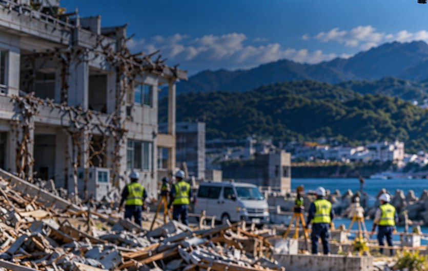
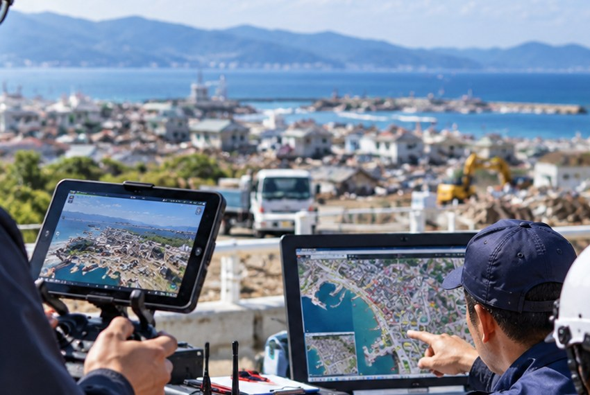
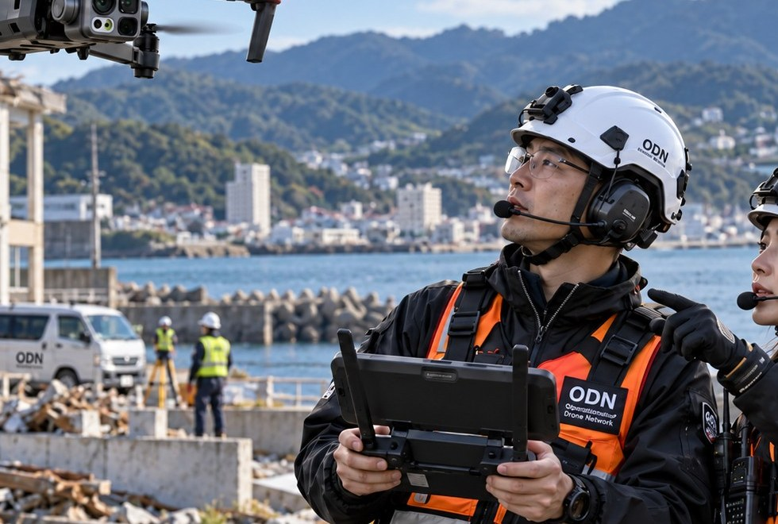
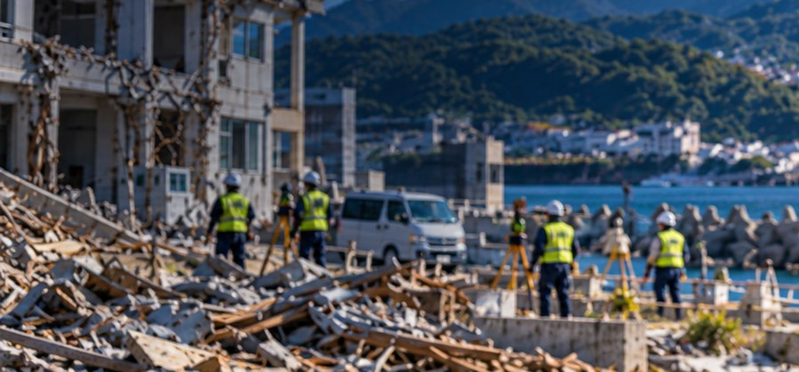
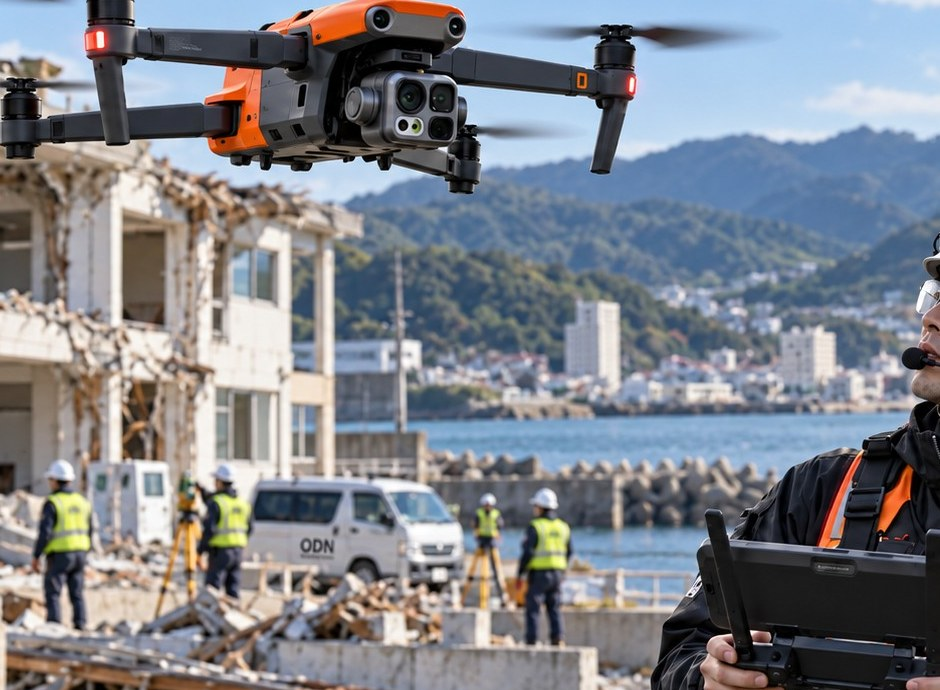
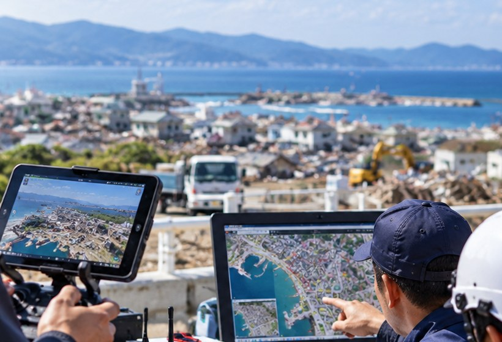
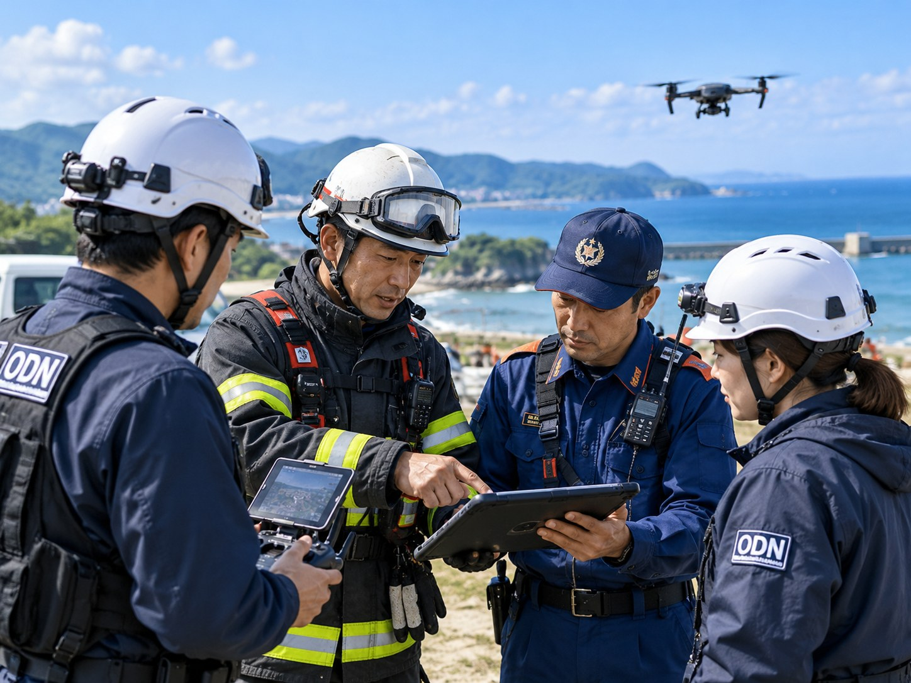
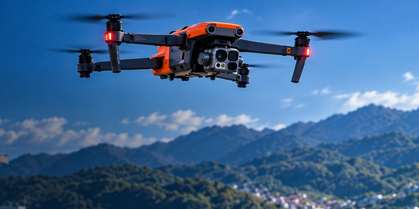
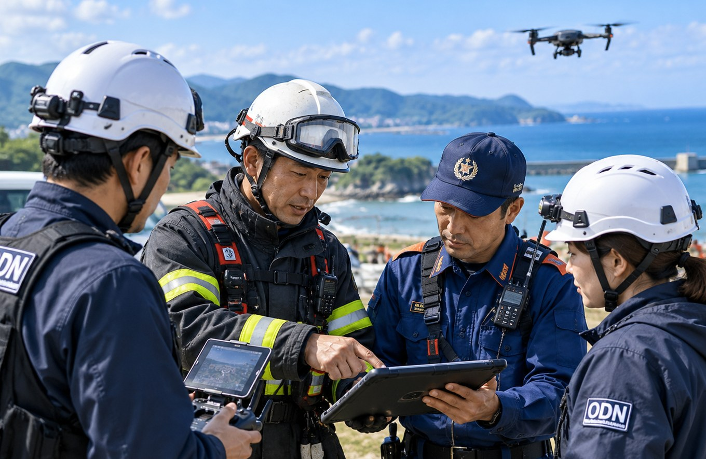
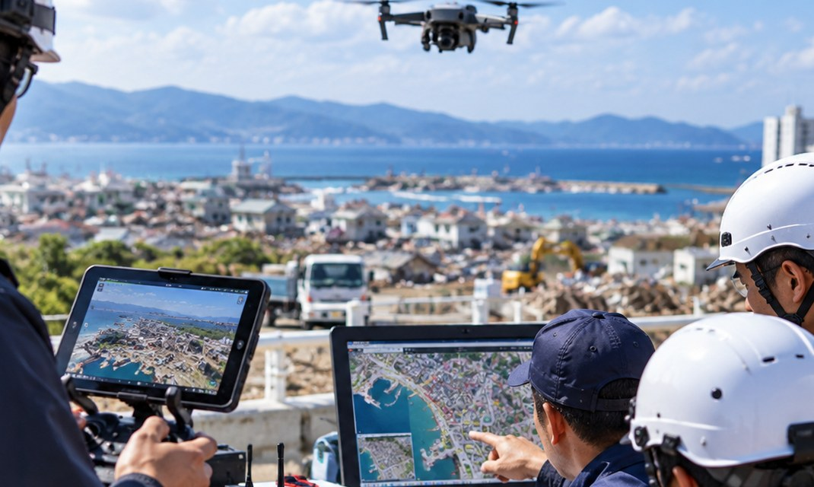

飛行前点検
機体・バッテリー・通信機器などの点検を確実に行います。
被災状況の把握や現場支援のため、
ドローンを活用して上空から必要な情報を迅速に収集します。
災害時にドローンを活用し、地上から確認しにくい被災状況を映像・写真で記録します。集めた情報は、関係機関との調整のもと、安全な災害対応を支えるために活用します。
上空から建物・道路・インフラなどの被害状況を確認します。

撮影した映像・写真を整理し、関係機関との情報共有に活用します。

行方不明者の捜索で、上空からの情報提供を行います。

関係機関からの要請や現場状況を確認し、安全性と実施可能性を判断します。
飛行場所、気象条件、周辺の人や建物、必要な手続きを確認します。
ドローンによる撮影を行い、必要な映像・写真を収集します。
収集情報を整理し、関係機関の災害対応や捜索活動を支援します。
沿岸部の被害状況や浸水範囲を上空から確認します。

土砂崩れや河川周辺の状況、孤立地域の確認を支援します。

山間部や沿岸部などでの捜索活動を支援します。

機体・バッテリー・通信機器などの点検を確実に行います。
飛行エリアや時間帯について、必要な調整を行います。
周辺の人や建物への影響を避け、安全を最優先します。
収集した情報は、消防・救急・医療・行政などの関係者と必要に応じて共有します。平時からの連携や情報交換を通じて、迅速かつ効果的な支援を目指します。




※ 写真は説明用に制作されたイメージです。実際の災害現場やODNの活動記録ではありません。